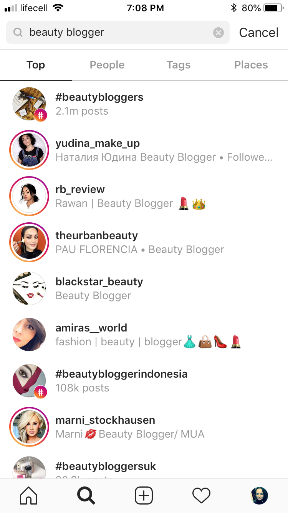
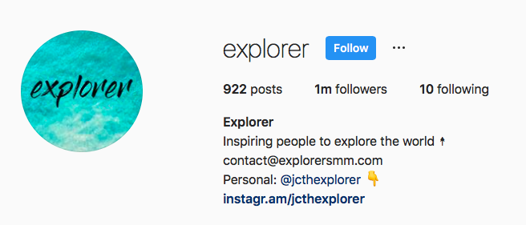
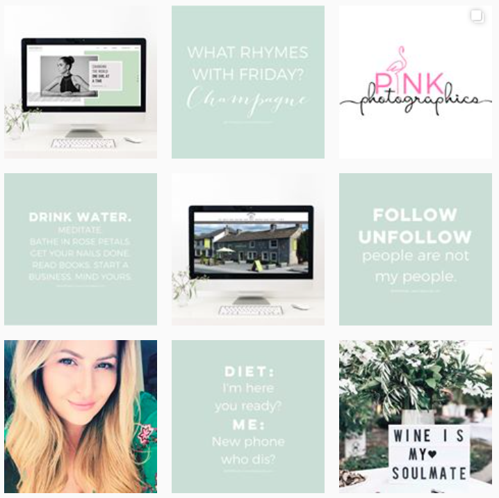
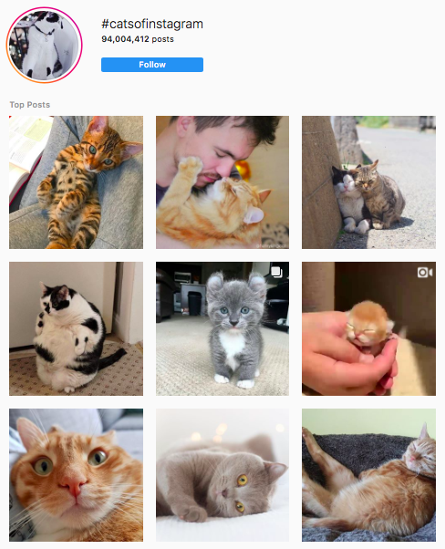
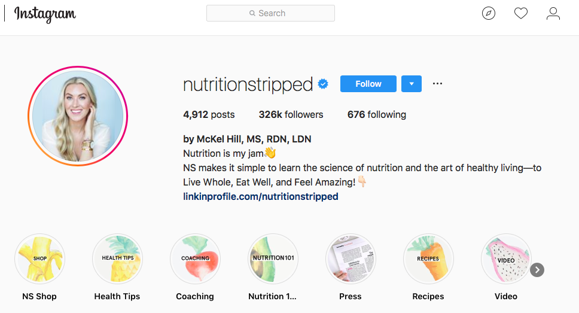

Acceder
Registrarse
Have you been wandering how on earth to increase your Instagram following organically? Are you still contemplating on the pros and cons of the follow-unfollow method? Have you caught yourself thinking to try out that Instagram followers’ booster “absolutely free”? Are you getting all confused with the ever-changing algorithm of the visual monster app? Have you even resorted to considering to pay for followers on your Instagram account? Congrats. You have landed in the right spot. In this exhaustive piece we will provide you with the complete list of dos and don’ts, the ultimate guide of exact steps and algorithms on how to increase your IG followers. Organically. No tricks or shortcuts. Only hard work, sweat and all the fun of engaging with your community. Let’s go!
As a wise man once said, “If you cannot beat’em, join ‘em”. The sooner you embrace, that every cheating scheme gets a countermeasure sooner or later… The sooner you acknowledge that fake followers will not buy a thing from your shop… The sooner you get it, that only genuine Instagram followers are the ones that contribute to your further growth… The quicker you will stop wasting your efforts with fruitless routines and invest your time and creativity where it will get rewarded with those covet 100s and 1000s of new insta followers – day in day out. 20 tips on how to grow Instagram followers fast By no means do we mean to offend any hard-core seasoned Instagram users, the below list will have some basics too – for the sake of the guide to be ultimate and complete we have to cover the foundation of managing your Instagram account.
1. Investigate your competitors or industry leaders Instagram accounts Put that Sherlock hat on. Go discovering. Deep dive. Look for the leaders. Looks for most successful small players. Check out the losers too. See the trends. Vivisect their feed. Leave no emoji unturned. See when they post, what they post, how many followers they have, what hashtags they use, what filters they prefer, how long is their regular caption, learn what influencers worked best for them, understand how often they boost their posts, see what their most popular post is and get to the bottom of why, find out if they use call to action and what the demographics of their audience is. The list is endless. You get it. The better you understand who you are competing with, the more chances to succeed at it. Easy. Chapter takeaway: preparation is half the battle.
 2. What’s in a name? The art of choosing your Instagram account name Naming is art, we all know that by now. Even though all big names are taken by now with Instagram boasting over a billion monthly active users as of June 2018, take the time to pick the best name for your account – from the tens of billions combinations that are still left unregistered. Make it short, sweet and memorable. It should also be descriptive and easy to spell. Integrating a popular or relative to your business niche hashtag into your account name is not a bad idea either. Search engines live by keywords and Instagram is no exception. Chapter takeaway: in the beginning was the name.
3. Instagram profile image: getting the best out of 110x110 pixels “You never get a second chance to make a first impression” is a quote by Will Rogers, a person who lived in pre-Instagram era, but still holds true. So however tricky that may be to choose one image representing you or your business, that will neatly fit into less than 1 cm2 on a mobile screen, you have to do it remembering the wise words of Oklahoma’s favourite son. As with every mission, a thorough competitor check is required for successful completion. Go and hit the biggest accounts within your industry – see the colour scheme choice, size, mode etc. This is the picture that your followers will see most, remember. It has to be easily recognizable, visually appealing and telling the story at the same time. And yes, remember – you only get 110 by 110 pixels for that /*chuckles uncontrollably*/. Chapter takeaway: sometimes you don’t get to decide if less is more or more is more.
 4. IG BIO & how to write a copy that helps you boost your Instagram followers Instagram BIO is the most important 150 characters you will ever write in your IG account. So be patient and take your time. Read up on some theory and click through the best in your industry. These few lines have to be more about your audience and how you can resolve their issues. This is not the right spot to brag about who you are and what you’ve achieved. This is a perfect place for telling how your brand will help your followers elevate their lives and make the difference before and after. When it comes to technicalities, this guide we found pretty useful, explaining how to do line breaks in bio, use spacing, formatting and more. And yes, using bullet points and relevant emoji’s does help to break down your messaging, give it order and take more space on the screen = give extra visibility. As it stands at the end of 2018, you can include 1 proper link in your account. But now Instagram users can also link up profiles and hashtags in their bios. So any word, that follows @ or # turns into a link. This is a great way to link up to some popular hashtags in your chosen sphere of influence or integrate your own specific hashtag, that you plan on using heavily – signalling direct ownership of that very keyword with the account. If you use your personal profile to promote your business – this is also a great chance to link them up. Chapter takeaway: in BIO they should trust.
5. Feed & Grid Consistency in Instagram: delivering on your promise The neater your account looks at the first sight, the more chances you will convert that cyber passer-by into your follower. Consistency is paramount in Instagram feed – both visually and contextually. Choose your style, filters, frames, layouts & colours and stick to them. We have all seen the accounts that look messy, unappealing, chaotic and generally all over the place. And we have all left them. Which proves the point, that most people are psychologically attracted to orderly environments, that promise comfort and let your aesthetics rejoice, as opposed to fleeing the crime scene in panic. Similarly, once you have chosen your niche, adhering to it is paramount for many reasons. Major one being your beloved followers. They started following you for a reason. Make sure you build up on that reason with more of what they loved you for in the first place. Another reason is that Instagram algorithm will then also pick up the signs of you being so devoted to your chosen field of expertise, that it will start suggesting your profile and promoting it within this very niche. Chapter takeaway: Fashion changes but style endures. /Coco Chanel/
 6. The best time to post in order to grow Instagram followers organically. There is no uniform answer for this riddle of Instagram. But the general rule of a thumb for business account owners will be to simply check the stats and see when your audience is most active. If you have not yet took the step from a personal to business account for some reason, use your common sense as to when you post your content. It is highly advised not to post it when everybody sleeps or is working; and it is also recommended to post regularly in a chosen time frame for best results. By using your common sense, we do mean doing research of competitors, taking into account cultural specifics /Spaniards having their late dinners with wine is a perfect example/ and industry particulars /posting in the morning for a strip club might end up somewhat useless/. But as long as you train Instagram algorithm and your followers to your allocated thoroughly-selected time frame, you should start seeing the benefits of this tip and increasing your IG following naturally. Chapter takeaway: it’s all about timing.
7. Foreplay & After-party: the vital stages of growing your Instagram followers. Every adult knows the importance of the foreplay in adult life: a good foreplay keeps your partner interested, prepared and glides both parties into the main occasion smoothly. Similarly, with Instagram posts, one has to give a little bit of time for both, the system and the audience, to warm up. If you allow 10-20 minutes of your time prior to posting your content to engage with your followers’ posts – you will end up with more activity on your post and your chances of getting into the Explore feed increase exponentially. Rushing off right after posting is a rookie mistake a pro will never make. Hang out there for another 20-30 minutes to jump onto new comments. Each reply you provide to a comment on your post doubles the number of activity and automatically signals popularity to Instagram algorithm. It is a social media after all – let’s keep it social. Chapter Takeaway: Interact and you shall be interacted with. s
8. Using Hashtags is akin to creating Google Ads campaign inside Instagram There can be no 2 opinions on this one: hashtags increase your visibility, it is statistically proven as hashtags are basically the equivalent of keywords in Google ads campaign. Use them. Period. How many hashtags to use in each post? The maximum is 30. Using 20-25 makes perfect sense in order to use almost maximum allowed lottery tickets to be featured without looking desperate & feeling spammy. What hashtags will help your account gain more Instagram followers? That you have to decide, inclusive with the help of multiple apps, abundant in App Store and Google Play. Free or Freemium versions is up to you – try, test and research for the best one for your needs – depending on budgets and growth vigour you aim to achieve. We recommend to use: 5-7 of the big ones /#catsofinstagram/ 10-15 of the mid-sized ones /200K-500K submissions: #catsdaily/ a couple of industry-specific or geo hashtags /with few thousand submissions only: #catsofitaly/ 1 unique hashtag of your own making /#thefluffiestcatofitaly/ This formula will most likely help you manage not only to get the initial traction with niche audience, but then also will give you a head start to a big league should your post’s popularity prove worthy of it. Chapter Takeaway: Hashtags - the golden currency of the Instagram, spend it wisely. 
9. Tagging the right accounts and staying away from the wrong ones There is no scientific data to support this thesis, but this has been formulated empirically, thusly trustworthy. When you tag @kimkardashian in your post and she does not comment back on it or as much as double-taps on it, combined with other thousands of low-ranking accounts who have done exactly that, you might end up signalling to Instagram some spammy moves. Insta will eventually get it, that you are trying to piggy-back on Kim’s reputation and will shrug you off, like a fly trying to land on a birthday cake. But when you tag a charity cause while attending an island they help restore after an earthquake, or if you tag a museum on a post of a happy enlightened you against one of their current exhibits – you are quite likely to get a double-tap or even a comment back. This is when Instagram will know, that you guys are truly connected and may also feature this post to the audience of that charity or a museum. Chapter Takeaway: don’t tag @kimkardashian, do tag @vamuseum
10. Geotagging – the where and the how to grow your audience in IG. Yet another tool in your arsenal. Use it to widen your audience and abstain from using it not to narrow it. Ideally if you target a wide international demographics, you would use it every once in a while or whenever you travel to a new place. If your target audience is local only, it makes perfect sense to keep tagging your preferred geo locations within your area every time. In either case, do use apps available and check top accounts for best practices and top venues to geotag. Chapter Takeaway: New York, New York
11. Comments – your best weapon to create true meaningful bond and engagement Nothing works just as personally as comments in the Instagram promotion. Comment & reply to comments: as often as you can as quickly as you can as relevant as you can as meaningful as you can as personalised as you can Emoji’s without text do look robotic and don’t bring much added value to a conversation or the bond with your target audience. Go on, be generous with your praise and genuine opinions and you will be rewarded with natural growth of your Instagram followers and highly likely organic growth of your off-line friends list too: the modern history is abundant with love stories born via social media. Chapter Takeaway: comment and you shall be commented upon.
12. Follow. And Unfollow. Or not. The hot topic for all those on a mission to grow the numbers of Instagram followers. How topical is the follow/unfollow method? Is it still working at all? The simple answer is YES. The good old tried and tested method has been tried and tested by Agorapusle and the results speak for themselves. As they say, old habits die hard. Instagram culture has been such for years, that if someone follows you – you return a favour and keep an eye on their feed. We believe following back is a natural response in Instagram ecosystem, this is seen as the common courtesy by at least 10 percent of the Instagram users - to follow back. There is a myriad of app and software, that does the routine following on behalf of your account for a monthly fee. We will not advise any specific resources for you, as they all carry high level of risk for the account to be suspended altogether. But as practice shows, when used in moderation, such apps may actually help accounts gain more followers in Instagram. Chapter Takeaway: use at your own risk, in moderation and as addition to all of the above, not instead all of the above.
13. Instagram Stories – the high tech laser sword of the IG armoury The stories in Instagram is like prime time of TV. If you were a producer, would you rather air your program when everyone is asleep, frantically getting ready for work, busy in the corporate meetings or relaxed and ready to be entertained after long hours in office? Same here. Stories get featured on the very top of the feed. The crème de la crème of the feed. The prime time of your feed. Not using is - to put it mildly - not too wise. Chapter Takeaway: Just do it.
14. Instagram stories highlights – the neat array of albums below your bio Yet another reason to use Instagram stories feature. They can be nicely lined up as a library of videos just under your bio. How handy. Categorize, create an icon, use keywords for titling – all of those little tricks can help rank your account higher when it comes to your fields of expertise. Canva is definitely the tool of choice when it comes to creating beautiful stylish icons for your Instagram stories highlights. Intuitive interface and huge library in free subscription makes it a go-to instrument for every beginner. Here is a great step-by-step manual on how to create IG stories highlight covers by Later. Chapter Takeaway: A fantastic way to keep your stories live and working for you. 
15. Instagram live – the Breaking News of the Instagram If Stories are like getting the prime time on a TV broadcast schedule, streaming live is like interrupting an 8 PM show with breaking news. You get pushed to the feed of your followers. Virtually pushing with virtual elbows through the competition. If you need to host a Q&A session, to launch a new product or just strem from an even everybody is excited about – Instagram LIVE is THE feature to use. Staying on the verge of new features signals to the platform, that you are part of the trend-setting circle. It spells out as high priority to us, right? Chapter Takeaway: Go live. Hijack that prime spot in the feed of your followers.
16. To gain more Instagram followers hang out with the like This one is as simple as it sounds. It is highly recommended that you mix with the like. If you are a photographer, like, follow and comment other in your trade. If you are a dessert baker, like, follow, comment other more famous bakers. This way you signal the platform that you are affiliated with them, you are like them, you share similar interest. After all those signs of similarity and likeness, Instagram starts sharing their audience with you. It starts to offer you as suggested account. Don’t disperse your effort and confuse algorithm with liking around. Don’t comment around. Don’t like around. Don’t follow around. Keep it in the family. Chapter Takeaway: Mix with the likes of yours. Peers & industry leaders only.
17. Cross pollination – quid pro quo It is highly likely you have Facebook, Twitter, Pinterst and maybe even a Youtube channel on top of your Instagram account. If you do have at least one of them – it is only very reasonable to cross promote. Mention your IG account on Twitter. Link it in your Facebook profile. Leave a comment under your Youtube Video encouraging to check out your Instagram page. Do a contest on Pinterest with a link to your IG. It might not bring you thousands of new followers to your Instagram account overnight, but it will trickle down bit by bit, adding up to the growth. Chapter Takeaway: do cross promote your page for quick growth of Instagram account.
18. Understand your analytics – learn from ups and learn from downs. Getting it right every time is impossible. Some of your posts will be more popular, some will surprise you with total dips in the performance. If you are going as planned or your feed is exhibiting an unusual trend – do look for answers in your analytics. Getting it wrong is OK, we are all humans. But a pro will not repeat one and the same mistake twice. A pro will learn from mistakes and will make sure this never happens again. Analytics in your business account is there to help. Chapter Takeaway: Understand your trends to build on successes and prevent mistakes.
19. Collaborate with the likes to benefit from each other Pretty common a practice in Youtube, collaborations are still rare in Instagram. Get on top of that void, before it has become a routine mundane practice for all. Find yourself an account you are genuinely interested in and offer to do a cross-promotion of sorts. Be it a contest with giveaways, common attendance of an event with cross-tagging or some other creative exchange. Go wild, become friends after all. Followers like to see magic happening – and going from online to offline is akin to magic nowadays. Give them the joy of following 2 authorities on a subject creating the bond together. Chapter Takeaway: find the right person you are genuinely interested in – your followers will sure get interested in them too, it’s a two-way road.
20. Try and boost your posts selectively to get more engagement in Instagram. If you were to pay to gain more Instagram followers, we would recommend paying to Instagram itself. Fair enough – you are using the platform to bring you money, it is only just to share some of the money with the platform. Great news is this is the most reliable and most controllable investment of all. And you will definitely not get blocked for this. Yes, choosing a target audience is an art in itself, AB tests are to become the next Olympic sports we hear and operating a Business account manager sometimes feels like requiring a PhD. But still we cannot recommend enough an occasional boost of your best posts here and there. You don’t need to invest huge amounts – it’s a pay as you go deal, where you have full control of your spending at every minute your campaign is on. Chapter Takeaway: Instagram ads are an efficient means of increasing followers AKA the only recommended way to buy Instagram followers.
Long story short AKA a one sentence recap on how to increase your Instagram followers fast. No way. No miracles or overnight +10Ks. The only sustainable recipe is: lots of prep, tons of engagement, loads of genuine interest, heaps of passion for your business. Plus the tricks above. Liked the article? Share, like, comment and stay cool. Stay tuned, we will keep you updated on the more tricks how to boost and grow your account.
Registration
A new password will be send on your email
Ooops, it is 404 error and you have got 1 million followers
Get 1 million Followers
We are sorry to see you leaving so fast...
Know more
We noticed that you are leaving but you still haven’t got your 68$+
Register